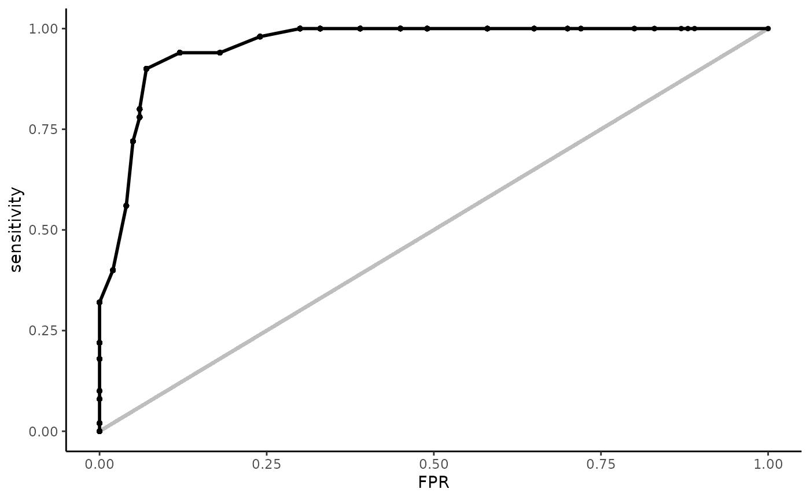

There are two types of inputs for each function in {rtichoke}:
Predictions and Outcomes:
This type of input is similar to inputs from similar packages such as pROC etc.
You can do so in three different ways:
Each function in rtichoke has a variation that supports this kind of input.
Performance Data:
Performance Data is a dataframe that contations perfomance metrics for different cutoffs.
Similar packages to `rtichoke` display curves that are based on performance metrics that looks perfectly smooth, the purpose of rtichoke
is slightly different: The aim is to help the user to better identify the relationship between the cutoffs and to give him the freedom to
manipulate in order to understand better the connection between the cutoffs and the curve.
Another reason for using Performance Data is that building plots that based on small datasets is much less memory consuming than reusing
smoothing algorithms over and over.\
Each Performance Data is built from the metrics in the confusion matrix:
TP, FP, TN, FN.
sensitivity = TP / (TP + FN)
specificity = TN / (TN + FP)
\
In order to prepare Performance Data you need to call `prepare_performance_data()`This function obviously must take **Predictions and Outcomes** as input.
Only some functions in `rtichoke` has variations that supports this kind of input
Some of the functions in rtichoke are built to work with an object that is called “performance_data” - a data frame that includes different performance metrics for different cutoffs.
But other functions are built to work estimated probabilities and outcomes. Each of these function starts with “create” (as create from scratch) - create_*():
| Predictions and Outcomes | Performance Data | |
|---|---|---|
| Performance Data | prepare_performance_data() |
X |
| ROC | create_roc_curve() |
plot_roc_curve() |
| Lift | create_lift_curve() |
plot_lift_curve() |
| Gains | create_gains_curve() |
plot_gains_curve() |
| Precision Recall | create_precision_recall_curve() |
plot_precision_recall_curve() |
| Decision | create_decision_curve() |
plot_decision_curve() |
| Calibration | create_calibration_curve() |
X |
| Interactive Table | create_interactive_table() |
make_interactive() |
| Interactive Report | create_interactive_report() |
X |
| rtichoke | rtichoke() |
X |
Curves that are generated from performance metrics can be called by plot_*_curve() or create_*_curve from Performance Data.
| Sensitivity | Specificity | FPR | PPV | Positive Rate | LIFT |
Net Benifit |
Threshold | |
|---|---|---|---|---|---|---|---|---|
| ROC | V | V | ||||||
| Lift | V | V | ||||||
| Gains | V | V | ||||||
| Precision Recall | V | V | ||||||
| Decision | V | V |
Interactive or Non-Interactive
Each plot of performance metrics in rtichoke has two versions:
Why the curves aren’t smooth?
Unlike other packages rtichoke doesn’t use a smoothed curve but a collection of connected dots, the justification for this type of … is that most of the time 100 cutoff are enough.
Smoothing algorithms are expensive computationally, and specifically for this type of curves it might not give the user some useful insights. In fact smoothing can hide some useful information, such as the distribution of the cutoffs on the curves given a symmetry of threshold cutoffs or symmetry of probabilities percentiles {rephrase in a better way}.
Take a look at these two versions of the same ROC curve:
by argument:
If the user wants to have a moother curve he can do so by change the by argument from the default 0.01 (like in the seq function):
create_roc_curve(
probs = example_dat$estimated_probabilities,
real = example_dat$outcome,
by = 0.0001)
enforce_percentiles_symmetryargument:
If the use wants to observe cutoffs according to probabilities percentiles he can do so by setting the enforce_percentiles_symmetry to TRUE.
Interactive Performance Data is just a reactable object that wraps a Performance Data and returns an HTML object..
There are two advantages that are built in interactive tables:
TRUE returns a crosstalk object that let the user filter by model / population and main slider.